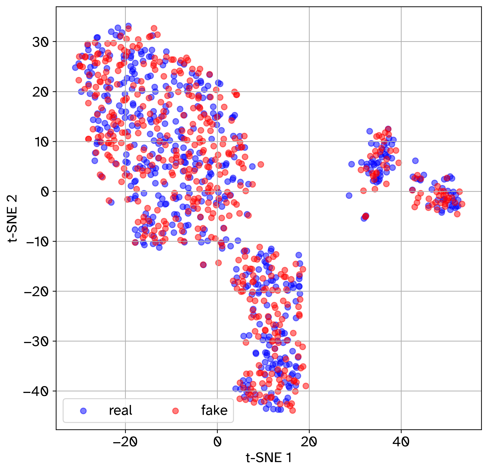
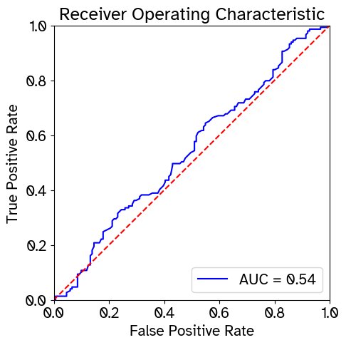
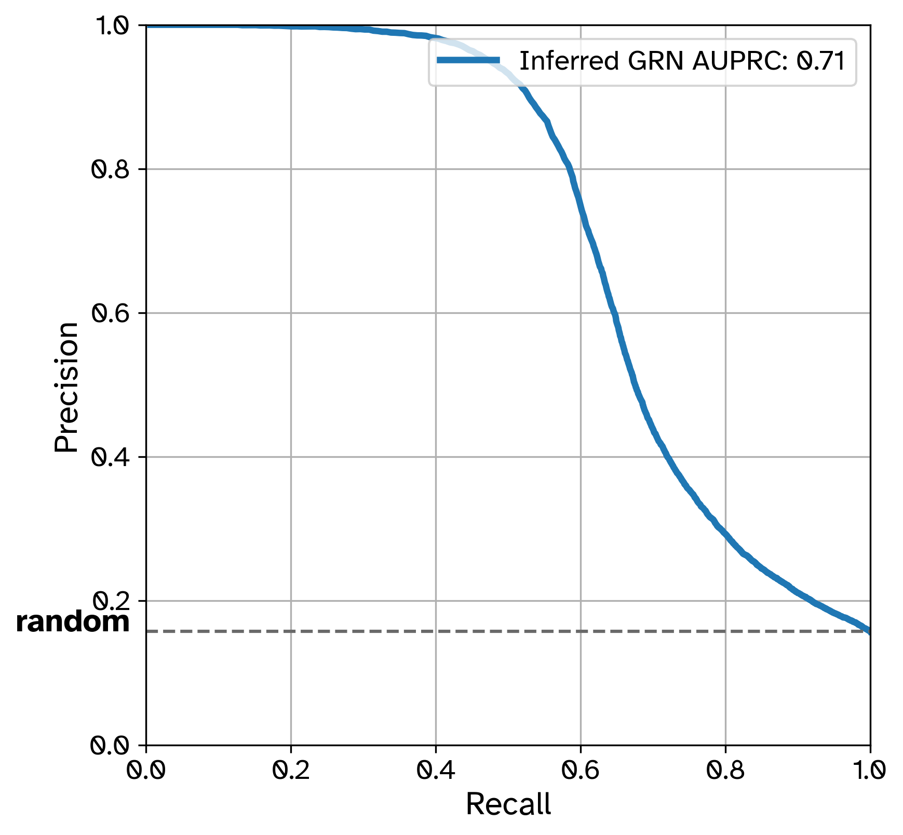
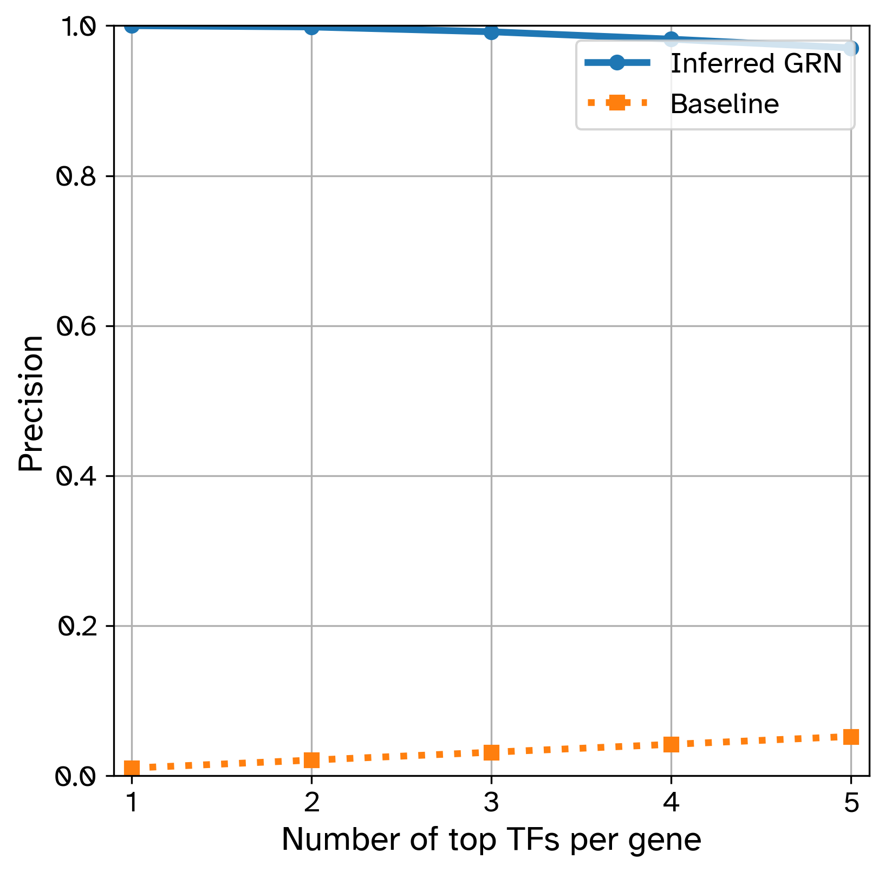
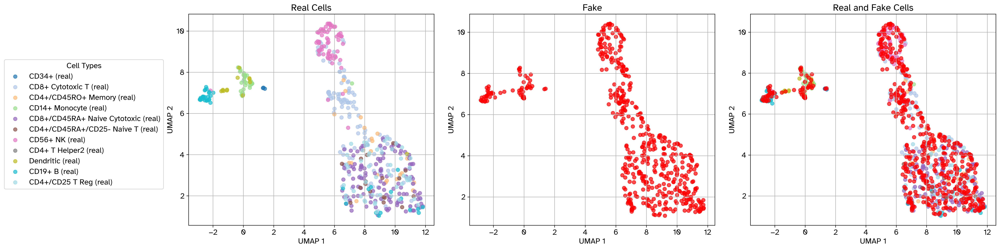
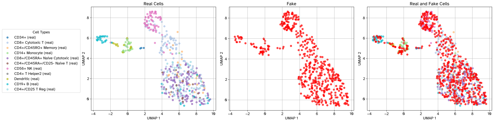
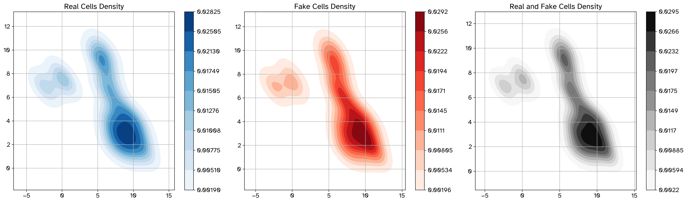
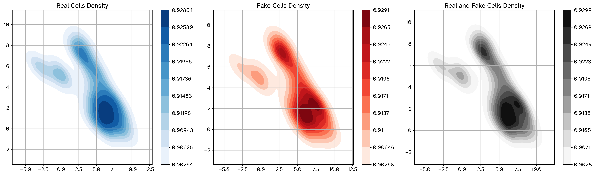

Tutorial#
CLI#
GRouNdScale comes with a command-line interface. This section outlines available commands and arguments.
To use the CLI, run the src/main.py script with the desired command and any applicable options.
Note
When using the Docker image, replace python src/main.py with docker run --gpus all milos7250/groundscale:latest in the commands below. Similarly, when using Apptainer, replace it with apptainer run --nv groundscale.sif. See Installation for more details.
The command requires a configuration file and accepts the following flags:
--config PATH(required): Path to the configuration file.--preprocess: Preprocess raw data for GAN training.--create-grn: Infer a GRN with GRNBoost2 or RustScenic and format it as a causal graph.--train: Start or resume model training.--optimize-hyperparameters: Start or resume Optuna hyperparameter optimization.--generate: Simulate single-cell RNA-seq data in silico.--evaluate: Evaluate the quality of the simulated dataset.--benchmark-grn: Evaluate an inferred GRN against the ground-truth GRN.--perturb: Run a perturbation experiment with a trained model.
The eight operation flags can be combined where appropriate. Hyperparameter optimization must be run separately from generation, evaluation, GRN benchmarking, and perturbation.
Note
You can run commands individually:
python src/main.py --config configs/causal_gan.cfg --preprocess
Or chain them together to run all or multiple steps in one go:
python src/main.py --config configs/causal_gan.cfg --preprocess --create-grn --train --generate --evaluate
When chaining multiple commands, ensure that the supplied configuration file includes the required arguments for each command in the chain.
Runtime Environment Variables#
Important
It is recommended to set the following environment variables before running the CLI commands.
Set the following environment variables to control the number of threads used by OpenMP and TorchInductor. A recommended value is the number of physical CPU cores available on the node. For example, if your node has 8 physical cores, set both variables to 8:
export OMP_NUM_THREADS=8
export TORCHINDUCTOR_COMPILE_THREADS=8
TorchInductor, autograd, and Triton caches can be enabled with:
export TORCHINDUCTOR_CACHE_DIR="$TMPDIR/torchinductor_cache"
export TORCHINDUCTOR_FX_GRAPH_CACHE=1 TORCHINDUCTOR_AUTOGRAD_CACHE=1 TRITON_CACHE_AUTOTUNING=1
export TORCHINDUCTOR_FORCE_DISABLE_CACHES=0
Warning
TORCHINDUCTOR_CACHE_DIR must point to a directory specific to the current
invocation of the script. It should be on a local filesystem, not on a networked drive, to
avoid cache collisions and slow compilation.
Logging and progress output are controlled with:
export GROUNDSCALE_LOGLEVEL=${GROUNDSCALE_LOGLEVEL:-INFO}
export GROUNDSCALE_NO_TQDM=${GROUNDSCALE_NO_TQDM:-0}
export LOGLEVEL=${LOGLEVEL:-WARNING}
GROUNDSCALE_LOGLEVEL controls GRouNdScale’s application logs, GROUNDSCALE_NO_TQDM=1 disables progress bars, and LOGLEVEL controls general logger output.
Config Files#
GRouNdScale uses a configuration syntax similar to INI implemented by python’s configparser module.
We provide three sample config files in the configs/ directory:
causal_gan.cfg: for GRouNdScaleconditional_gan.cfg: for cscGAN with projection conditioning (Marouf et al., 2020) and cWGAN.gan.cfg: for scGAN (Marouf et al., 2020) (we use this to train GRouNdScale’s causal controller)
Most of the configuration file consists of hyperparameters. You mostly need to modify input and output parameters which we will go through in each section. GRouNdScale isn’t very sensitive to hyperparameters. However, it is still advisable to test different choices of hyperparameters using a validation set.
Configuration values can reference environment variables using
${VARIABLE_NAME} syntax. GRouNdScale uses ConfigParser interpolation, so the
environment is resolved when the configuration is read. For example:
output directory = ${GROUNDSCALE_OUTPUT_DIR}
storage = postgresql://${POSTGRES_USER}:${POSTGRES_PASSWORD}@${PGHOST}:${PGPORT}/${POSTGRES_DB}
When POSTGRES_USER, POSTGRES_PASSWORD, PGHOST, PGPORT, and
POSTGRES_DB are exported, the PostgreSQL URL is interpolated to the
corresponding connection string automatically.
Learning Rate Scheduling#
The [Learning Rate] section controls the generator and critic learning-rate
schedule. The same options can be set in [CC Learning Rate] for the causal
controller. If omitted, the scheduler uses cosine decay, a 2% warmup, and a
60% holding endpoint.
[Learning Rate]
generator initial = 0.0001 ; maximum learning rate
generator final = 0.00001
critic initial = 0.0001 ; maximum learning rate
critic final = 0.00001
decay type = cosine ; linear, cosine, or exponential
warmup percent = 0.02
holding percent = 0.60
The schedule has three phases:
Warmup increases the learning rate to the configured initial rate.
Holding keeps the maximum rate until
holding percentof training. This percentage includes the warmup phase. For example, with 100 steps,2%warmup and60%holding means warmup for 2 steps, hold through step 60, then begin decay.Decay reduces the rate to the configured final rate using the selected curve.
Set holding percent = 1.0 to disable decay and keep the maximum rate after
warmup. warmup percent must not exceed holding percent.
Below is the demo causal_gan.cfg config file for training GRouNdScale using the PBMC68k dataset:
[EXPERIMENT]
output directory = results/GRouNdScale
device = cuda ; we will let the program choose what is available
checkpoint ; set value to use a trained model
compile modules = True ; use torch.compile for faster training
use DDP = False ; use distributed data parallel training
random seed ; optional random seed
deterministic mode = False ; use deterministic algorithms where supported
[Preprocessing]
10x = True
raw = data/raw/PBMC/
validation set size = 1000
test set size = 1000
annotations = data/raw/PBMC/barcodes_annotations.tsv
min cells = 3 ; genes expressed in less than 3 cells are discarded
min genes = 10 ; cells with less than 10 genes expressed are discarded
library size = 20000 ; library size used for library-size normalization
louvain res = 0.15 ; Louvain clustering resolution (higher resolution means finding more and smaller clusters)
highly variable number = 1000 ; number of highly variable genes to identify
[GRN Preparation]
TFs = data/raw/Homo_sapiens_TF.csv
method = grnboost2 ; "grnboost2" for GRNBoost2/Arboreto, "rustscenic" for RustScenic
k = 15 ; k is the number of top most important TFs per gene to include in the GRN
Inferred GRN = data/processed/PBMC/inferred_grnboost2.csv
; "top" for selecting top k edges
; "pos ctr" for generating positive control GRNs (even indices 0, 2, 4... = top 1, 3, 5, ...)
; "neg ctr" for generating negative control GRNs (odd indices 1, 3, 5... = top 2, 4, 6, ...)
; note that k has to be a pair number for strategy=ctr
strategy = top
include genes with no regulators = False
[Data]
train = data/processed/PBMC/PBMC68k_train.h5ad
validation = data/processed/PBMC/PBMC68k_validation.h5ad
test = data/processed/PBMC/PBMC68k_test.h5ad
number of genes = 1000
; this causal graph is a pickled nested dictionary
; nested dictionary keys are gene indices
; the dictionary is of this form:
; {381: {51, 65, 353, 664, 699},
; 16: {21, 65, 353, 605, 699},
; ...
; 565: {18, 51, 65, 552, 650}}
; In this example, 381, 16, and 565 are gene indices in the input dataset
; Each key's (gene's) value is the indiced of its regulating TFs in the input dataset
; A tutorial will be made available in the future.
causal graph = data/processed/PBMC/causal_graph.pkl
[Generation]
number of cells to generate = 10000
generation path ; will save to [Experiment]/output directory/simulated.h5ad if left undefined
[Evaluation]
simulated data path ; will use [Generation]/generation path if left undefined
plot umap = True ; Note: has to be true in order to run miLISI
compute euclidean distance = True
compute cosine distance = True
compute rf auroc = True
compute MMD = True
compute miLISI = True ; plot umap has to be True for this to work
[GRN Benchmarking]
grn to benchmark = path/to/inferred/grn.csv
ground truth save path = data/generated/
plots save path = results/GRouNdScale/
compute precision at k = False
k = 5
compute pr = True
[Perturbation]
save dir = data/generated/
; tfs to perturb and perturbation values are paired. The two lists need to be of the same size.
tfs to perturb ;= TF names separated by a space (ex: IRF8 CEBPA)
perturbation values ;= Float values separated by a space to set respecive TF in tfs to perturb (ex: 0 100.2)
[Model]
type = causal GAN
noise per gene = 1
depth per gene = 3
width per gene = 2
critic layers = 1024 512 256
labeler layers = 2000 2000 2000
latent dim = 128 ; noise vector dimensions
lambda = 10 ; regularization hyper-parameter for gradient penalty
[Training]
batch size = 1024
critic iterations = 5 ; iterations to train the critic for each iteration of the generator
maximum steps = 1000000
labeler and antilabeler training intervals = 1
[Optimizer]
; coefficients used for computing running averages of gradient and its square
beta1 = 0.5
beta2 = 0.9
[Learning Rate]
generator initial = 0.001
generator final = 0.0001
critic initial = 0.001
critic final = 0.001
decay type = cosine ; linear, cosine, or exponential
warmup percent = 0.02
holding percent = 0.60
labeler = 0.0001
antilabeler = 0.0001
[Logging]
summary frequency = 10000
plot frequency = 10000
save frequency = 100000
rf auroc frequency = 10000
[CC Model]
type = GAN ; Non-conditional single-cell RNA-seq GAN
generator layers = 256 512 1024
critic layers = 1024 512 256
latent dim = 128 ; noise vector dimensions
lambda = 10 ; regularization hyper-parameter for gradient penalty
[CC Training]
batch size = 128
critic iterations = 5 ; iterations to train the critic for each iteration of the generator
maximum steps = 200000
[CC Optimizer]
; coefficients used for computing running averages of gradient and its square
beta1 = 0.5
beta2 = 0.9
[CC Learning Rate]
generator initial = 0.0001
generator final = 0.00001
critic initial = 0.0001
critic final = 0.00001
decay type = cosine ; linear, cosine, or exponential
warmup percent = 0.02
holding percent = 0.60
[CC Logging]
summary frequency = 10000
plot frequency = 10000
save frequency = 100000
rf auroc frequency = 10000
Project outline#
GRouNdScale is structured as follows:
.
|-- .git
|-- .gitattributes
|-- .github
| `-- workflows
| |-- docker-build.yml
| `-- documentation.yaml
|-- .gitignore
|-- .gitmodules
|-- Atkinson_Hyperlegible
|-- Beeline
|-- LICENSE
|-- README.md
|-- configs
| |-- causal_gan.cfg
| |-- conditional_gan.cfg
| `-- gan.cfg
|-- data
| |-- generated
| |-- interim
| |-- processed
| | |-- BoneMarrow
| | `-- PBMC
| `-- raw
| |-- BoneMarrow
| |-- Homo_sapiens_TF.csv
| |-- Mus_musculus_TF.csv
| `-- PBMC
|-- docker
| |-- Dockerfile
| |-- build-docker.sh
| |-- build-apptainer.sh
| `-- apptainer.def
|-- docs
|-- notebooks
|-- conda-env-create.sh
|-- environment.yml
|-- requirements.txt
|-- requirements2.txt
|-- requirements-dev.txt
|-- results
|-- scDesign2
|-- scGAN
|-- scripts
| |-- benchmark.sh
| |-- common.sh
| |-- create-grn.sh
| |-- evaluate.sh
| |-- generate.sh
| |-- hyperopt.sh
| |-- preprocess.sh
| `-- train.sh
|-- sparsim
`-- src
Demo Datasets#
The provided docker image does not come prepackaged with the unprocessed Mouse BoneMarrow (Paul et al., 2015) and Human PBMC68k (Zheng et al., 2017) datasets. To obtain the demo datasets, along with human and mouse TFs, downloaded from AnimalTFDB, download the files from here and place them in data/raw/.
You can also do this in bash (you need curl and tar installed):
$ curl https://nextcloud.computecanada.ca/index.php/s/WqrCqkH5zjYYMw9/download --output demo_data.tar &&
tar -xvf demo_data.tar -C data/raw/ &&
mv data/raw/demo/* data/raw &&
rm demo_data.tar &&
rm -rf data/raw/demo/
Steps#
Preprocessing#
Attention
Don’t skip the preprocessing step, GRouNdScale requires library-size normalized data as input.
To run our preprocessing pipeline, your config file should contain the following arguments:
[EXPERIMENT]
[Preprocessing]
; set True if data is 10x (like PBMC)
; set False if you're providing an .h5ad file (like BoneMarrow.h5ad)
10x = True
; If 10x = True, path to the directory containing matrix.mtx, genes.tsv, and barcodes.tsv
; If 10x = False, path to the .h5ad file containing the expression matrix
raw = data/raw/PBMC/
validation set size = 1000 ; size of the validation set to create
test set size = 1000 ; size of the test set to create
annotations = data/raw/PBMC/barcodes_annotations.tsv ; optional, leave empty if you don't have annotations
min cells = 3 ; genes expressed in less than 3 cells are discarded
min genes = 10 ; cells with less than 10 genes expressed are discarded
library size = 20000 ; library size used for library-size normalization
louvain res = 0.15 ; Louvain clustering resolution (higher resolution means finding more and smaller clusters)
highly variable number = 1000 ; number of highly variable genes to identify
[Data]
train = data/processed/PBMC/PBMC68k_train.h5ad ; path to output the train set
validation = data/processed/PBMC/PBMC68k_validation.h5ad ; path to output the validation set
test = data/processed/PBMC/PBMC68k_test.h5ad ; path to output the test set
number of genes = 1000
Then, run the following:
$ python src/main.py --config configs/causal_gan.cfg --preprocess
Once completed, you will see a success message. Train, validation, and test sets should be created in the paths defined under the [Data] section of the config file.
Expected output:
[11:13:56] INFO (randomness) Initial random seed: 564061517 randomness.py:11
INFO (randomness) Using seed 564061517 for Python and NumPy random number generation. randomness.py:25
[11:14:04] INFO (preprocessing.preprocess) Loading data... preprocess.py:28
[11:14:08] INFO (preprocessing.preprocess) Shuffling data... preprocess.py:35
INFO (preprocessing.preprocess) Clustering data... preprocess.py:45
[11:15:05] INFO (preprocessing.preprocess) Filtering data... preprocess.py:79
[11:15:07] INFO (preprocessing.preprocess) Subsetting highly variable genes... preprocess.py:89
[11:15:09] INFO (preprocessing.preprocess) Saving datasets... preprocess.py:128
[11:15:11] INFO (preprocessing.preprocess) Successfully preprocessed and saved dataset. preprocess.py:136
INFO (preprocessing.preprocess) Train set (48189 cells, 15000 genes): data/Col0_0h_scVI_train.h5ad preprocess.py:137
INFO (preprocessing.preprocess) Validation set (10326 cells, 15000 genes): data/Col0_0h_scVI_val.h5ad preprocess.py:140
INFO (preprocessing.preprocess) Test set (10326 cells, 15000 genes): data/Col0_0h_scVI_test.h5ad preprocess.py:141
INFO (GRouNdScale CLI) Finished main.py:141
GRN Creation#
Note
GRN creation isn’t needed for scGAN, cscGAN, and cWGAN; you can skip the --create-grn command.
This command infers a GRN on the preprocessed train set and then converts it into the a format that GRouNdScale accepts. The inference backend is selected with the [GRN Preparation]/method option, which accepts either grnboost2 (the default) or rustscenic.
In addition to what was required in the previous step, you need to provide the following arguments:
[GRN Preparation]
TFs = data/raw/Homo_sapiens_TF.csv
method = grnboost2 ; "grnboost2" for GRNBoost2/Arboreto, "rustscenic" for RustScenic
k = 15 ; k is the number of top most important TFs per gene to include in the GRN
Inferred GRN = data/processed/PBMC/inferred_grnboost2.csv
; "top" for selecting top k edges
; "pos ctr" for generating positive control GRNs (even indices 0, 2, 4... = top 1, 3, 5, ...)
; "neg ctr" for generating negative control GRNs (odd indices 1, 3, 5... = top 2, 4, 6, ...)
; note that k has to be a pair number for strategy=ctr
strategy = top
include genes with no regulators = False ; retain genes with no inferred regulators
[Data]
causal graph = data/processed/PBMC/causal_graph.pkl ; where to write the created GRN
method is case-insensitive and defaults to grnboost2 when it is omitted, so existing configurations keep their previous behaviour. Any other value raises an error. The backend’s package is imported only when its method is selected, so the default path does not pay the import cost of the alternative.
By default, the top k most important regulating TFs of each gene will be included in the GRN (strategy = top). Alternatively, you can construct two separate GRNs, each containing half of these top k TFs per gene. By first setting strategy = neg ctr and then strategy = pos ctr, you generate two GRNs with identical densities and structural properties, based on the odd/even positions of the TFs in each gene’s ranked list. This strategy can be useful for controlled comparative analyses as both GRNs are equally sparse and are derived from the same underlying ranking.
The TFs option is optional. When it is omitted, all genes in the
preprocessed training data are passed to the selected backend as candidate
regulators.
Because this produces genes in both regulator and target roles, GRouNdScale
compares each gene’s total outgoing edge importance (where it is a TF)
with its total incoming edge importance (where it is a target). A gene is
selected as a TF when its outgoing importance is greater than its incoming
importance. Only edges from selected TFs to non-TF targets are retained.
If the file specified by Inferred GRN already exists, GRouNdScale skips
inference and reads the existing file instead. The file must contain the
columns TF, target, and importance. This makes it possible to
reuse an inferred GRN or provide a GRN generated by another method.
GRN creation also removes genes that cannot be represented in the selected bipartite graph; the train, validation, and test files are rewritten with the retained genes so the generated causal-graph indices remain aligned with the data.
Choosing a Backend#
Both backends return edges sorted by descending importance and write the
same three columns (TF, target, and importance), so everything
after inference — the top-k selection, the positive/negative control
strategies, the bipartite filtering, and the causal-graph construction — behaves
identically regardless of which one you pick. They differ in implementation,
in how they consume the preprocessed data, and in their resource use:
grnboost2runs GRNBoost2 (Moerman et al., 2018) through Arboreto on the library-size-normalized expression matrix exactly as it is written by preprocessing.rustscenicruns RustScenic (Kahraman, 2026), a Rust reimplementation of the same gradient-boosted tree model, with out-of-bag early stopping and multi-threaded execution. It works on its own copy of the data and applies its own normalization (library size 10,000) followed bylog1pbefore inference. The preprocessed files are left untouched, so the same preprocessed dataset can be used to infer GRNs with either backend for comparison.rustscenicsizes its Rayon thread pool from theOMP_NUM_THREADSenvironment variable recommended above, and pins the BLAS/OpenMP thread counts to1for the duration of the inference so the thread pools do not oversubscribe each other. LeaveOMP_NUM_THREADSunset to use 8 threads.
Both backends are installed by requirements.txt and are therefore available
in the Docker and Apptainer images as well as in the Conda environment.
Running Inference Standalone#
Each backend is also a self-contained script that infers a GRN from an
.h5ad file and writes it to a CSV, without building a causal graph:
$ python src/preprocessing/run_arboreto.py data/processed/PBMC/PBMC68k_train.h5ad \
data/raw/Homo_sapiens_TF.csv --out data/processed/PBMC/inferred_grnboost2.csv
$ python src/preprocessing/run_rustscenic.py data/processed/PBMC/PBMC68k_train.h5ad \
data/raw/Homo_sapiens_TF.csv --out data/processed/PBMC/inferred_rustscenic.csv
The arguments are the input .h5ad file and a path to a file containing TF
names in a column named Symbol. The delimiter is detected automatically, so
the same tab-separated list that [GRN Preparation]/TFs accepts works here
unchanged, as does a comma-separated one. Pass the literal all (the default)
instead to treat every gene as a candidate regulator. Use --out to set the
output path and --seed to set the random seed. To use the resulting CSV in
GRouNdScale, point [GRN Preparation]/Inferred GRN at it and run
--create-grn, which will reuse the existing file instead of running
inference again.
Note
Unlike [GRN Preparation]/TFs, the scripts do not filter the TF names
down to the genes present in the dataset, so check the TF list against your
.h5ad file’s var_names before passing it in.
Run using:
$ python src/main.py --config configs/causal_gan.cfg --create-grn
Once done, you will see success messages and the properties of the created GRN.
Expected output:
[09:25:19] INFO (randomness) Initial random seed: 297847097 randomness.py:11
INFO (randomness) Using seed 297847097 for Python and NumPy random number generation. randomness.py:25
[09:25:33] INFO (preprocessing.grn_creation) Starting GRN inference using grnboost2 with all TFs. grn_creation.py:73
preparing dask client
Using 63 TFs for GRN inference.
preparing dask client
parsing input
creating dask graph
4 partitions
computing dask graph
shutting down client and local cluster
finished
[00:10:44] INFO (preprocessing.grn_creation) Successfully saved GRN inferred by grnboost2 to data/inferred_grnboost2.csv grn_creation.py:76
[00:10:46] INFO (preprocessing.grn_accessor) Filtered GRN to bipartite graph with 5053 TFs and 9939 targets. grn_accessor.py:139
INFO (preprocessing.grn_creation) Creating top 15 GRN from top TFs grn_creation.py:96
[00:10:47] INFO (preprocessing.grn_creation) Included 8 targets with no regulators in the causal graph grn_creation.py:128
[00:10:50] INFO (preprocessing.grn_creation) Causal graph info: grn_creation.py:161
``TFs`` 5053
``Targets`` 9947
Genes 15000
Possible Edges 50262191
Imposed Edges 148889
GRN density Edges 0.3%
INFO (preprocessing.grn_creation) Successfully saved GRouNdScale causal graph to data/causal_graph.pkl grn_creation.py:181
INFO (GRouNdScale CLI) Finished
The causal graph will be written to the path specified by [Data]/causal graph in the config file.
Warning
The inference step can take a long time depending on the number of highly variable genes defined in the preprocessing step. Larger datasets will benefit from more CPU cores and memory allocated to the GRN creation step.
Imposing Custom GRNs#
It is possible to instead impose your own GRN onto GRouNdScale. One way to do this is to provide a custom .csv file containing the GRN data, as mentioned in the previous section. It is also possible to provide the GRN as a Python dictionary, as described below.
If you’re opting for this option, skip the --create-grn command. Instead, create a python dictionary where keys are gene indices (int). For each key (gene index), the value is the set of indices set[int] coresponding to TFs that regulate the gene.

The GRN in the picture above can be written in dictionary form as:
causal_graph = {
"G2": {"TF2", "TFn"},
"G1": {"TF1"},
"Gn": {"TF2", "TF1"},
"G3": {"TFn", "TF1"}
}
Converting the key/value pairs into gene/TF indices, it becomes
causal_graph = {
1: {4, 5},
3: {0},
6: {4, 0},
2: {5, 0}
}
Then, pickle the dictionary:
import pickle
with open("path/to/write/causal_graph.pkl", "wb") as fp:
pickle.dump(causal_graph, fp, protocol=pickle.HIGHEST_PROTOCOL)
Don’t forget to edit the causal graph path in the config file.
[Data]
causal graph = path/to/write/causal_graph.pkl
The GRN must be a directed bipartite graph
All genes and TFs in the dataset must appear in the dictionary either as key (target gene) or value (as part of the set of TFs)
Warning
Construct a biologically meaningful GRN!
Imposing a GRN with significantly different TF-gene relationships from those observable in the reference dataset will deteriorate the quality of simulated cells as generating realistic simulated datapoints and imposing the GRN will act as contradictory tasks
Training#
You can start training the model using the following command:
$ python src/main.py --config configs/causal_gan.cfg --train
Upon running the command above, four folders will be created inside the path provided in the config file ([EXPERIMENT]/output directory) and the config file will be copied over:
checkpoints/: Containing the.pthstate dictionary including model’s weights, biases, etc.TensorBoard/: Containing TensorBoard logs (saved as tfevent files)UMAP/: Containing UMAP plots of real vs simulated cells.RF_AUROC/: Containing random-forest AUROC plots.
You can change the save, logging, plotting, and RF AUROC frequencies in the
[Logging] section of the config file. The [EXPERIMENT] section also
supports compile modules (default True), use DDP (default
False), random seed, and deterministic mode (default False).
Monitor training using TensorBoard:
tensorboard --logdir="{GAN OUTPUT DIR HERE}/TensorBoard" --host 0.0.0.0 --load_fast false &
Slurm workflows are provided in scripts/ for preprocessing, GRN creation,
training, generation, evaluation, benchmarking, and hyperparameter
optimization. Every script contains a default CODE_ROOT path. Before using
the scripts from a clone, either export CODE_ROOT or edit the default in
each script so it points to the directory where this repository is cloned:
export CODE_ROOT=/path/to/GRouNdScale
The scripts validate that CODE_ROOT exists before running. CONFIG can
also be exported to select the configuration file passed to the workflow.
Example output:
[09:08:30] INFO (training.gan) Initializing training...
[09:08:42] INFO (training.gan) Starting training loop...
[09:12:55] INFO (training.gan) Step 5000:
Generator Loss -5.1e+04
Generator Total Loss -5.1e+04
Critic Total Loss -2.3e+05
Validation Total Loss 1e+04
[09:12:58] INFO (training.gan) Step 5000: Computed Random Forest AUROC: 0.825
...
[00:08:37] INFO (training.gan) Step 500000:
Generator Loss -2.2e+03
Generator Total Loss -2.2e+03
Critic Total Loss -1.5e+03
Validation Total Loss -3.4e+03
[00:08:40] INFO (training.gan) Step 500000: Computed Random Forest AUROC: 0.524
Finished training after 500000 steps.
Note
Training time primarily depends on the number of target genes and the density of the imposed GRN. Expect roughly a day of training time and 10GB of GPU memory required for each 2000 HVGs. These estimations are based on training GRouNdScale on a single NVIDIA A100 GPU with a TF to target gene ratio of 8%.
GRouNdScale supports multi-GPU training, but we suggest sticking to a single GPU to avoid excess overhead.
GRouNdScale trains for a 500000 steps by default.
You can resume training from a checkpoint by setting
[EXPERIMENT]/checkpointin the config file to the.pthcheckpoint you wish to use.
Hyperparameter Optimization#
GRouNdScale can optimize configuration values with Optuna. Run optimization
with a configuration containing a [Hyperparameter Optimization] section:
[Hyperparameter Optimization]
number of trials = 20
storage ; optional Optuna database URL; defaults to a database in the output directory
study name = optuna_study
worker id environment variable = SLURM_ARRAY_TASK_ID ; optional distributed worker identifier
Values to optimize are declared in sections prefixed with HO ``. For
example, ``[HO Training] resolves values into [Training] and
[HO Learning Rate] resolves values into [Learning Rate]:
[HO Training]
batch size = (16 128)
critic iterations = (1 10)
[HO Learning Rate]
generator initial = (1e-5 1e-3)
critic initial = (1e-5 1e-3)
Tuple values define Optuna ranges. A blank HO will skip that parameter
and use the default value from the config file. Each trial is
written to a numbered subdirectory of the configured output directory.
By default, optimization uses a local SQLite database at
<output directory>/optuna_study.db.
Warning
PostgreSQL is recommended when running
multiple workers, since it provides a shared database for coordinating trials;
set its connection URL with the storage option. A config can construct the
URL from environment variables, for example:
storage = postgresql://${POSTGRES_USER}:${POSTGRES_PASSWORD}@${PGHOST}:${PGPORT}/${POSTGRES_DB}
If those environment variables are set before launching GRouNdScale, ConfigParser interpolates them into the correct PostgreSQL URL.
Generation, evaluation, benchmarking, and perturbation should be run in a separate command after optimization completes.
Tip
The <output directory>/optuna_stop.txt file can be
used to request a graceful stop between trials. Simply uncomment the first line in this file
and GRouNdScale will finish the running trials and stop.
In-silico Single-Cell Simulation#
One training is done, populate the [EXPERIMENT]/checkpoint field with the path of the .pth checkpoint you want to use in the config file (usually the latest).
[EXPERIMENT]
output directory = results/GRouNdScale
device = cuda ; we will let the program choose what is available
checkpoint = results/GRouNdScale/checkpoints/step_1000000.pth
You can change the number of cells to simulate in the config file (10000 by default)
[Generation]
number of cells to generate = 10000
generation path ; will save to [Experiment]/output directory/simulated.h5ad if left undefined
Then run
$ python src/main.py --config configs/causal_gan.cfg --generate
This will output a simulated.h5ad file to [EXPERIMENT]/output directory containing the simulated expression matrix.
Expected output:
[10:41:08] INFO (randomness) Initial random seed: 129323924 randomness.py:11
INFO (randomness) Using seed 781759803 for Python and NumPy random number generation. randomness.py:25
[10:41:17] INFO (randomness) Using seed 781759803 for PyTorch random number generation. randomness.py:42
INFO (GRouNdScale CLI) Generating 10000 cells... main.py:116
[10:41:44] INFO (GRouNdScale CLI) Simulated cells saved to results/generated/simulated.h5ad main.py:123
INFO (GRouNdScale CLI) Finished main.py:141
Evaluating Simulated Data Quality#
You can evaluate the quality of GRouNdScale simulations using the following quantitative and qualitative metrics:
UMAP plots of jointly embedded experimental and simulated cells.
Euclidean distance between the mean expression profiles of experimental and simulated cells.
Cosine distance between the mean expression profiles of experimental and simulated cells.
ROC curve and AUROC of Random Forest classifier distinguishing experimental from simulated cells.
Maximum Mean Discrepancy (MMD) for assessing distributional similarity between experimental and simulated cells.
Mean integration local inverse Simpson’s index (miLISI) of experimental and simulated cells.
The above metrics are computed between the test set and an equal number of cells sampled from the simulated data. In the UMAP plots, greater overlap between experimental and simulated cells indicates better match. For the first three quantitative metrics (Euclidean distance, Cosine distance, and MMD), lower values reflect greater similarity. For the RF AUROC, values closer to 0.5 indicate that the classifier struggles to distinguish between simulated and experimental cells, which implies more realistic simulated data. For miLISI, values closer to 2 suggest better mixing of experimental and simulated cells. As a control, we also compute the Euclidean distance, Cosine distance, MMD, and miLISI metrics between two halves of the reference test set to serve as a point of comparison.
You can specify which evaluation metrics to compute by setting the appropriate
flags in the configuration file. Set plot umap = True to generate UMAP
figures; it is also required when computing miLISI.
[Evaluation]
simulated data path ; will use [Generation]/generation path if left undefined
plot umap = True ; Note: has to be true in order to run miLISI
compute euclidean distance = True ; or False
compute cosine distance = True
compute rf auroc = True
compute MMD = True
compute miLISI = True ; plot umap has to be True for this to work
To run the evaluation with the specified configuration, use the following command:
$ python src/main.py --config configs/causal_gan.cfg --evaluate
Expected output:
[10:41:08] INFO (randomness) Initial random seed: 129323924 randomness.py:11
INFO (randomness) Using seed 781759803 for Python and NumPy random number generation. randomness.py:25
[10:41:17] INFO (randomness) Using seed 781759803 for PyTorch random number generation. randomness.py:42
[10:41:59] INFO (evaluate) Euclidean distance (real vs fake): 201.62423706054688 data_quality.py:372
INFO (evaluate) Euclidean distance (control): 239.84703063964844 data_quality.py:373
INFO (evaluate) Cosine distance (real vs fake): 0.0003902912139892578 data_quality.py:375
INFO (evaluate) Cosine distance (control): 0.0006259679794311523 data_quality.py:376
[10:42:02] INFO (evaluate) RF ROC plot saved to results/RF.png data_quality.py:393
INFO (evaluate) RF AUROC: 0.5176753645092461 data_quality.py:394
INFO (evaluation.MMD) Calculating MMD scale parameters... MMD.py:30
INFO (evaluation.MMD) Calculating MMD score... MMD.py:112
INFO (evaluation.MMD) Calculating MMD scale parameters... MMD.py:30
INFO (evaluation.MMD) Calculating MMD score... MMD.py:112
INFO (evaluate) MMD (real vs fake): 0.0054506659507751465 data_quality.py:400
INFO (evaluate) MMD (control): 0.010092079639434814 data_quality.py:401
[10:42:04] INFO (evaluate) miLISI (real vs fake): 1.7733017691957873 data_quality.py:426
INFO (evaluate) miLISI (control): 1.7122457821796437 data_quality.py:427
INFO (GRouNdScale CLI) Finished main.py:141
 Example saved UMAP plot# |
 Example saved RF ROC plot# |


Benchmarking Inferred GRNs#
This command evaluates the reconstructed GRN (from GRouNdScale-simulate data) against the ground truth GRN (used for simulation).
Configuration file arguments:
grn to benchmark = path/to/inferred/grn.csv
ground truth save path = data/generated/
plots save path = notebooks/generated/
compute precision at k = True
k = 15
compute pr = True
You will need to provide the path to the inferred GRN ([GRN Benchmarking]/grn to benchmark). The GRN has to be a tab-separated .csv file with three columns in this order:
TF
Gene
importance
Headers are optional — only column order matters.
Example inferred GRN csv:
Gata1 Hbb-bs 0.89
Tal1 Hbb-bs 0.74
Gata2 Gfi1b 0.52
If enabled via the configuration file, the benchmarking command will generate one or both of the following plots, saved to the directory specified in [GRN Benchmarking]/plots save path:
- Precision@k
If
[GRN Benchmarking]/compute precision at k = True, measures how many of the top-k (specified by[GRN Benchmarking]/k) inferred TFs for a gene are actually true regulators according to the ground truth.
- Precision-Recall (PR) Curve
If
[GRN Benchmarking]/compute pr = True, a global Precision-Recall curve will be computed across all predicted edges in the GRN.
Both plots are saved as .png files, and any associated metrics (e.g., precision scores, AUPRC) are printed to the console.
Then run:
$ python src/main.py --config configs/causal_gan.cfg --benchmark-grn
Expected output:
[14:03:26] INFO (randomness) Initial random seed: 2427570532 randomness.py:11
INFO (randomness) Using seed 781759803 for Python and NumPy random number generation. randomness.py:25
[14:03:31] INFO (evaluate) Saved ground truth GRN to results/infer_grn_without_tfs/generated/ground truth GRN.csv grn_inference.py:92
[14:03:32] INFO (evaluate) Inferred GRN precision at k: [0.8431163287086446, 0.7299893276414088, 0.6417644966204198, 0.5498932764140875, 0.48046958377801496, grn_inference.py:241
0.4329420135183209, 0.4020429943588962, 0.3826040554962647, 0.36926360725720386, 0.36510138740661685, 0.36305423498593187, 0.3611704019921736,
0.3547327805598883, 0.3447171824973319, 0.33148345784418354]
INFO (evaluate) Baseline precision at k: [0.015873015873015872, 0.031746031746031744, 0.047619047619047616, 0.06349206349206349, 0.07936507936507936, grn_inference.py:242
0.09523809523809523, 0.1111111111111111, 0.12698412698412698, 0.14285714285714285, 0.15873015873015872, 0.1746031746031746, 0.19047619047619047,
0.20634920634920634, 0.2222222222222222, 0.23809523809523808]
INFO (evaluate) Saved precision at k plot at results/infer_grn_without_tfs/generated/Top_TF_precision.png grn_inference.py:272
[14:03:35] INFO (evaluate) Inferred GRN AURPC: 0.36 grn_inference.py:348
INFO (evaluate) Baseline AUPRC (random predictor): 0.23809523809523808 grn_inference.py:349
INFO (evaluate) Saved PR curve at results/infer_grn_without_tfs/generated/PR_curve.png grn_inference.py:354
INFO (GRouNdScale CLI) Finished main.py:141
 Example PR curve plot# |
 Example precision at K plot# |


Tip
The scripts/benchmark.sh script can be used to infer the GRN using grnboost2 and PIDC from the generated data and benchmark them against the ground truth GRN.
Exporting Ground Truth GRN#
If you specify [GRN Benchmarking]/ground truth save path, the ground truth GRN will be exported as a CSV:
TF (regulator),Gene (target)
Gata1,Hbb-bs
Tal1,Hbb-bs
...
This can be useful for reference or external benchmarking tools.
Perturbation Studies#
Once trained, GRouNdScale can sample from interventional distributions and perform in-silico TF perturbation experiments. These perturbations are applied to the same batch of cells, enabling matched case-control comparisons.
To run a perturbation, simply specify the list of TFs to perturb ([Perturbation]/tfs to perturb) and the corresponding values to which they should be set ([Perturbation]/perturbation values). The below configuration knocks out IRF8 and sets CEBPA to the value 100.2. The items in the list are separated by a space.
[Perturbation]
save dir = data/generated/
; tfs to perturb and perturbation values are paired. The two lists need to be of the same size.
tfs to perturb = IRF8 CEBPA ;= TF names separated by a space (ex: IRF8 CEBPA)
perturbation values = 0 100.2 ;= Float values separated by a space to set respecive TF in tfs to perturb (ex: 0 100.2)
Attention
Make sure perturbation targets ([Perturbation]/tfs to perturb) exist in the dataset and causal graph.
Once the configuration file is ready, run:
$ python src/main.py --config configs/causal_gan.cfg --perturb
Expected output:
Loaded GAN
Using checkpoint at results/GRouNdScale/checkpoints/step_1000000.pth
Saved cells before and after perturbation to data/generated/
The cells before and after perturbation will be saved as after_perturbation.h5ad and before_perturbation.h5ad in the specified directory for secondary analysis.


Example scatter plot before perturbation#


Example scatter plot after perturbation#


Example density plot before perturbation#


Example density plot after perturbation#
References#
Marouf, M., Machart, P., Bansal, V., Kilian, C., Magruder, D. S., Krebs, C., & Bonn, S. (2020). Realistic in silico generation and augmentation of single-cell RNA-seq data using generative adversarial networks. Nature Communications, 11(1). https://doi.org/10.1038/s41467-019-14018-z
Paul, F., Arkin, Y., Giladi, A., Jaitin, D. A., Kenigsberg, E., Keren-Shaul, H., Winter, D. R., Lara-Astiaso, D., Gury, M., Weiner, A., David, E., Cohen, N., Lauridsen, F. K. B., Haas, S., Schlitzer, A., Mildner, A., Ginhoux, F., Jung, S., Trumpp, A., … Tanay, A. (2015). Transcriptional heterogeneity and lineage commitment in myeloid progenitors. Cell, 163(7), 1663–1677. https://doi.org/10.1016/j.cell.2015.11.013
Zheng, G., Terry, J. M., Belgrader, P., Ryvkin, P., Bent, Z., Wilson, R. J., Ziraldo, S. B., Wheeler, T. D., McDermott, G. P., Zhu, J., Gregory, M., Shuga, J., Montesclaros, L., Underwood, J. G., Masquelier, D. A., Nishimura, S. Y., Schnall-Levin, M., Wyatt, P., Hindson, C. M., … Bielas, J. H. (2017). Massively parallel digital transcriptional profiling of single cells. Nature Communications, 8(1). https://doi.org/10.1038/ncomms14049
Moerman, T., Aibar, S., González-Blas, C. B., Simm, J., Moreau, Y., Aerts, J., & Aerts, S. (2018). GRNBoost2 and Arboreto: efficient and scalable inference of gene regulatory networks. Bioinformatics, 35(12), 2159–2161. https://doi.org/10.1093/bioinformatics/bty916
Kahraman, E. (2026). rustscenic: a Rust and Python implementation of SCENIC-style regulatory-network analysis (Version 0.5.0) [Computer software]. Zenodo. https://doi.org/10.5281/zenodo.22679755